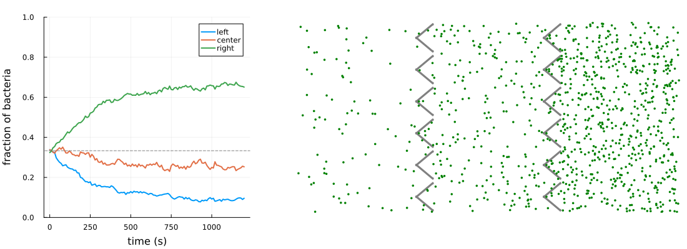

Rectification of motile bacteria by a wall of funnels
A wall of funnel-shaped obstacles breaks the left-right symmetry of the motion of swimming bacteria: those coming from the left are guided through the openings by the slanted arms, while those coming from the right are trapped in the concave vertices. The result is a net accumulation of bacteria on the right side of the wall (Galajda et al., J. Bacteriol. 189, 8704 (2007)).
Each funnel is a pair of capsules joined at their left end, forming a < that opens toward the right. Bacteria slide along the surfaces and are reflected by the walls of the chamber. Two identical walls of funnels divide the chamber in three regions of equal area.
using MicrobeAgents
using Random
using Plots
dt = 0.1 # s
Lx = 600.0 # μm
Ly = 300.0 # μm
space = ContinuousSpace((Lx, Ly); periodic=false)
# funnel wall
nf = 6 # number of funnels
p = Ly / nf # funnel period
len = 33.0 # arm length
α = deg2rad(40) # arm angle with respect to the horizontal
r = 2.0 # arm half-thickness
# the gap between the tips of adjacent funnels is p - 2len*sin(α) - 2r
function funnel(vertex)
tip(s) = vertex + len * SVector(cos(α), s * sin(α))
[ObstacleCapsule(vertex, tip(+1), r), ObstacleCapsule(vertex, tip(-1), r)]
end
# two walls, at 1/3 and 2/3 of the chamber, delimiting three regions of equal area
xwalls = (Lx / 3, 2Lx / 3)
arms = reduce(vcat, [
funnel(SVector(xw - len * cos(α) / 2, (k + 1 // 2) * p))
for xw in xwalls for k in 0:(nf-1)
])
obstacle_sets = (
Obstacles(space, arms; contact=Slide(; align=true)),
Walls(space; contact=Reflect()),
)
model = StandardABM(Microbe{2}, space, dt;
container=Vector,
properties = Dict(:obstacles => obstacle_sets),
)
# bacteria initially uniformly distributed
motility = RunTumble(run_speed=[20.0], run_duration=1.0, angle=Isotropic(2))
for _ in 1:1000
pos = random_free_position(model; radius=0.5)
add_agent!(pos, model; motility, radius=0.5, rotational_diffusivity=0.035)
end
nsteps = 12_000
when = 100
adf, _ = run!(model, nsteps; adata=[position], when)
X = Analysis.adf_to_matrix(adf, :position)
xs = first.(X) # rows: times, columns: bacteria
# fraction of bacteria in the left, central and right regions
frac(region) = vec(sum(region.(xs); dims=2)) ./ size(xs, 2)
left = frac(x -> x < xwalls[1])
center = frac(x -> xwalls[1] ≤ x < xwalls[2])
right = frac(x -> x ≥ xwalls[2])121-element Vector{Float64}:
0.324
0.331
0.348
0.354
0.369
0.374
0.376
0.389
0.391
0.403
⋮
0.665
0.662
0.661
0.675
0.664
0.658
0.655
0.654
0.651results
function capsule(c)
pts = vcat(
[c.a + c.radius * SVector(cos(t), sin(t)) for t in range(π/2, 3π/2, 16)],
[c.b + c.radius * SVector(cos(t), sin(t)) for t in range(-π/2, π/2, 16)],
)
Shape(first.(pts), last.(pts))
end
# fraction of bacteria in each region as a function of time
t = (0:when:nsteps) .* dt
p1 = plot(t, [left center right];
label=["left" "center" "right"],
xlabel="time (s)",
ylabel="fraction of bacteria",
ylims=(0, 1),
lw=2,
margin=5Plots.mm
)
hline!(p1, [1/3]; c=:gray, ls=:dash, label=false)
# final configuration
p2 = plot(xlims=(0, Lx), ylims=(0, Ly), ratio=1, axis=false, grid=false, leg=false)
foreach(c -> plot!(p2, capsule(c); c=:gray, lw=0), arms)
scatter!(p2, xs[end, :], last.(X)[end, :]; ms=2, c=:green, msw=0)
plot(p1, p2; size=(1100, 400), layout = grid(1, 2, widths=(0.35, 0.65)))